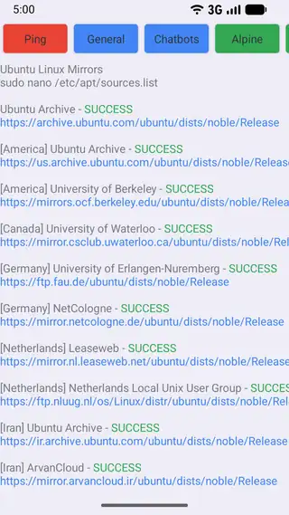
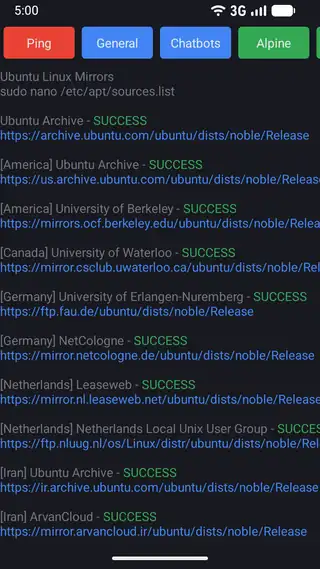

NodeLook
إنترنت ومتصفحات
NodeLook is a general website checker for users facing internet restrictions. It helps users determine whether a service is accessible through their current connection, or whether it is filtered or unavailable.
✓ ترخيص مفتوح (MIT) · آخر تحديث: 2026-07-20
1.5.0الإصدار
130 KBالحجم
MITالرخصة
Open in Kanzتحميل APK (130 KB)
Download APK
SHA-256: 63bd6a76ae499155bc05741c90705e18f1d64c2deac220207f83c3be45369b36


امسح الكود لفتح صفحة التطبيق
Scan to open this app page
لو كنز مش متثبت عندك: نزّل متجر كنز.
Not installed? Get the Kanz store.